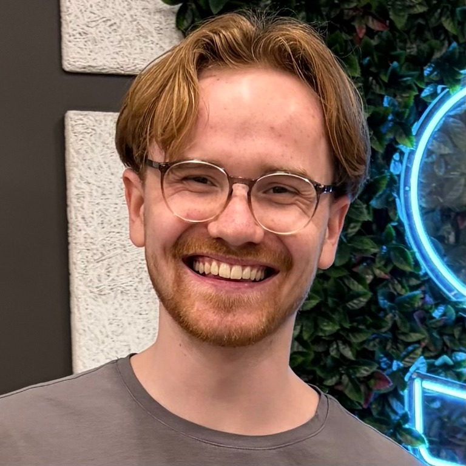
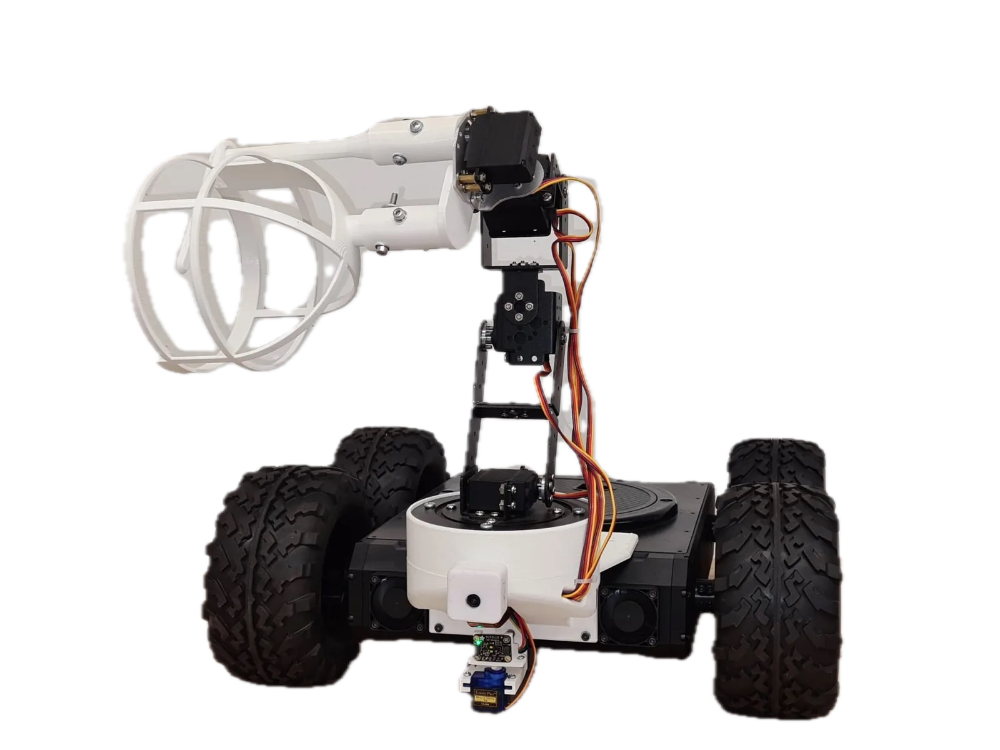

Sep 2026 – Aug 2028 (expected)
MSc Robotics
Delft University of Technology
Dynamics and control, machine learning, perception, planning, robot software, and human–robot interaction.
First year student
Robotics · Sensing · Mechanical design
My dream is to build robotic systems that can see, hear, and feel the world as we humans do.
MSc Robotics at TU Delft · Skin Team Lead, RSA Project Echo

01 / About
I’m a robotics master’s student at TU Delft, building on a BSc in Mechanical Engineering – Product Engineering and Context at TH Köln, where I graduated with a final grade of 1.1.
My main interest is robotic perception: enabling robots to see, hear, and feel their environment so they can interact naturally and safely with people. My projects have explored computer vision for an agricultural robot, tactile sensing with conductive fabric, and auditory perception in my bachelor’s thesis on Furhat.
At Furhat Robotics in Stockholm, I worked across hardware and software prototyping, including the 360° Furhat mechanism and Furpack. Today, I’m at TU Delft, where I deepen my knowledge in a variety of robotics topics such as machine learning, robot control and human–robot interaction. Furthermore, I started the skin team in RSA Project Echo, where we focus on tactile sensing for humanoid robots.
02 / Education
Sep 2026 – Aug 2028 (expected)
Delft University of Technology
Dynamics and control, machine learning, perception, planning, robot software, and human–robot interaction.
Oct 2022 – Apr 2026
Cologne University of Applied Sciences / TH Köln
Product Engineering and Context: a project-based programme combining mechanical engineering, product development, robotics, and interdisciplinary design.
Apr 2023 – Mar 2026
National merit-based scholarship, co-funded by the German Federal Government and Alfred Schütte GmbH.
03 / Selected work
Six projects connecting
physical systems and intelligent behaviour.
 Ongoing
OngoingA flexible tactile sensor that localises touch — now informing humanoid skin research.

 Bachelor’s thesis
Bachelor’s thesisA mechanical microphone redesign that reduced mean word error rate by 9.3%.

A dedicated robot backpack developed from full-scale prototypes to manufacturing handoff.

A compact belt-driven mechanism that gives Furhat full-body rotational freedom.

A ROS 2 cobot that connects speech, vision and manipulation to fetch tools on request.

An autonomous rover made 18× faster by replacing scanning with camera-based detection.
04 / Work
Furhat Robotics
Oct 2025 – Apr 2026 · Stockholm, Sweden · Part-time
Apr – Sep 2025 · Stockholm, Sweden
Mar 2024 – Mar 2025 · Cologne, Germany
Cologne University of Applied Sciences / TH Köln
Nov 2023 – Jun 2024 · Data solutions
Perfect-Id GmbH

Jul – Nov 2023 · Remote · Freelance
Taktsoft Campus Talents
Aug 2021 – Jan 2022 · Cologne, Germany
Wolt Enterprises Germany
05 / Community
Oct 2022 – Apr 2026
I actively contributed to committees, fostered communication with professors, organised events, and advocated for key topics to support the academic community.
Nov 2025 – Feb 2026
Supported students preparing for exchange semesters at TH Köln.
Jul – Sep 2024
Evaluated teaching concepts and co-led a workshop on new teaching methods at the Day of Excellent Teaching.
06 / Toolkit
Issued November 2025 · Valid through November 2027
MathWorks · Completed April 2024
German
NativeEnglish
C2 · TOEFL 115French
B1+Swedish & Dutch
Beginner07 / Contact
Interested in robotics, research, or a project together?
I’d be happy to hear from you.